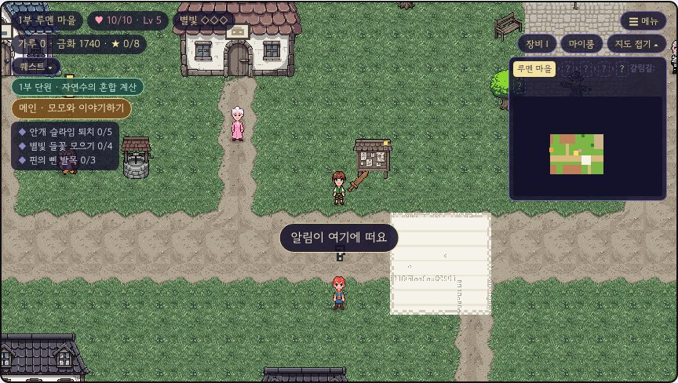

아르카 연대기 · 모험가 안내
문제를 맞히면 별빛이 생겨요. 그 별빛으로 지워진 마을을 다시 써요!
하고 싶은 것
키보드
태블릿
걷기
←↑↓→
/
WASD
방향 버튼
말 걸기 · 조사 · 읽기
스페이스
조사
공격
Q
공격
스킬
E
R
T
Y
스킬 버튼
점프
J
/
Z
점프
문제 답
1
2
3
답 누르기
장비 · 가방
I
장비
지도
M
지도
몬스터에 공격이 닿으면 문제가 떠요

왼쪽 위: 하트·레벨·퀘스트 (퀘스트 ▾ 를 누르면 접혀요)
모험의 약속
틀려도 괜찮아요! 피해가 절반이 되고 풀이를 보여 줘요.
풀이를 꼭 읽어요.
틀린 문제는 나중에
다시 만나요
. 맞히면 오답 노트에서 사라져요.
노란 화살표가 다음 할 일을 가리켜요. 막히면 마을
길드
에 가 봐요.
쓰러져도 벌칙은 없어요. 마이룸에서 회복해요.
좋은 장비는 몬스터·보물 상자에서 나와요. 등급: 일반 ·
레어
·
유니크
·
레전드